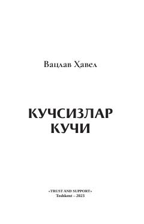

ККTotalitar tuzumlar va inson erkinligi haqidagi chuqur siyosiy-falsafiy tahlil.
Ushbu asar sobiq kommunistik tuzumning mohiyati, totalitar rejimlar va ularning mafkuraviy manipulyatsiyalari haqida hikoya qiladi. Muallif insonlarning g'ayriinsoniy tizimlarda o'zligini saqlab qolishi va demokratik rivojlanish yo'lida siyosiy dekompressiya qoidalariga amal qilish muhimligini tahlil qiladi.